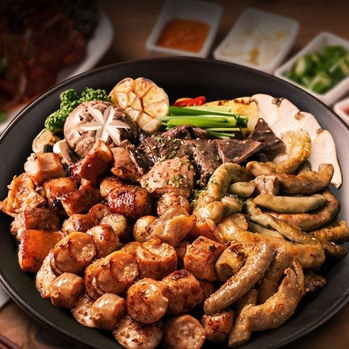

- 삼겹살
- 곱창
- 타코
곱창
소의 소장. 탄력섬유가 많으며, 고아서 먹거나 구워먹는 별미다. 한국에서는 술안주로 많이 먹는 곱창전골과 곱창구이, 한 끼 식사로 많이 먹는 내장탕과 곰탕을 만드는 데 쓴다. 서구권에서는 소뿐만 아니라 한국에서는 잘 먹지 않는 양의 내장도 활용하며, 소시지, 수프, 스튜, 바비큐를 만드는 데 이용하는 등 전 세계적으로 두루 쓰이고 있다.
곱이란 곱창의 특징이자 호불호가 갈리게 만드는 원인 중 하나. 곱창 속에 차 있는 쫀득쫀득한 액체를 말하는데, 그 정체는 소장 안에 남아있는 수분, 지방과 소화액의 덩어리다. 신선한 곱창은 소의 종류나 품질에 상관없이 곱이 두툼하게 차오르는 것을 볼 수 있다. 도축 후 시간이 오래 지났거나 냉동한 곱창은 곱이 잘 차오르지 않기 때문에 일반적으로 곱의 양이 곱창의 품질이라고 생각하면 된다.
곱 자체는 위생적으로 문제가 없으므로 먹어도 된다. 곱창에 든 곱이 똥이 아니냐는 사람도 있는데, 세척 전의 곱창을 보면 옥수수 사료 등 건더기가 그대로 남아있으며, 이는 우리가 아는 곱의 모습과는 거리가 멀다. 겉과 속을 뒤집어서 깨끗하게 씻어내도 열을 가하면 곱창벽에서 녹아나오는 것이 곱이다. 다만, 세척을 너무 과도하게 하면 곱창벽 조직이 상해서 익히기도 전부터 아까운 곱이 액체처럼 줄줄 흘러나오기 때문에 물을 조금씩 흘려보내며 살살 주물러서 손질한다.
